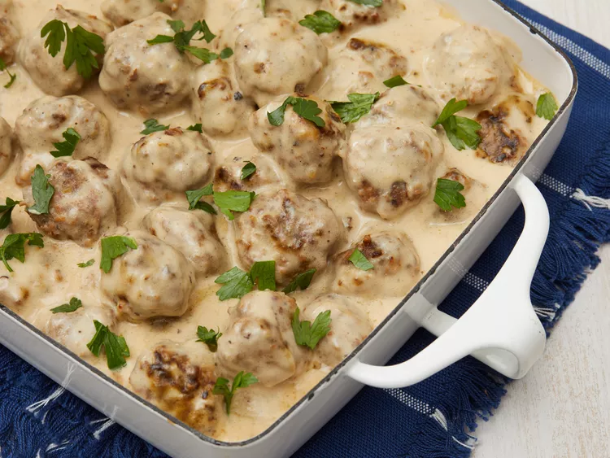

Swedish Meatballs

Description
This Swedish meatball recipe is our family's
Christmas tradition. We frequently double the recipe and keep it
warm in a slow cooker. Worth the effort, and the meatballs are even
better the next day! Reserve brown gravy and add sour cream to it
the day you serve the leftovers.
Ingredients
- 2 slices day-old white bread, crumbled
- 1/2 cup heavy cream
- 1 teaspoon butter
- 1 small onion, minced
- 2/3 pound ground beef
- 1/3 pound finely ground pork
- 1 egg
- 1 table spoon brown sugar (Optional)
- 1 teaspoon salt
- 1/4 teaspoon ground black pepper
- 1/4 teaspoon ground nutmeg
- 1/4 teaspoon ground allspice
- 1/8 teaspoon ground ginger (Optional)
- 1 tablspoon butter
- 1/4 cup chicken broth
- 3 tablespooons all-purpose flour, or as needed
- 2 cups beef broth, or as needed
- 1/2 (8 ounce) container sour cream